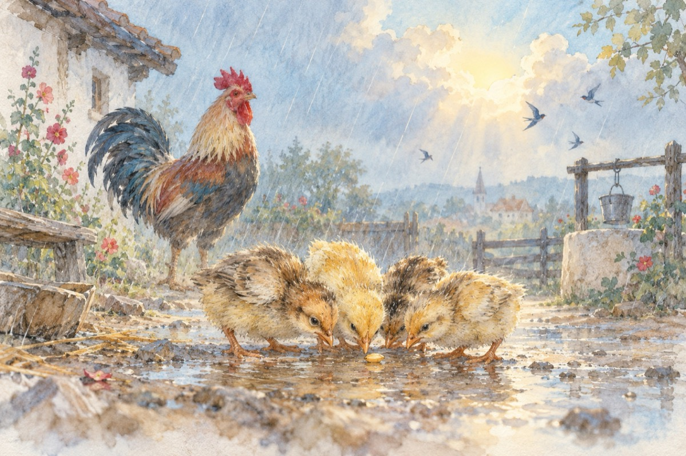

A venit toamna
Plouă-ntruna, bate vântul
S-a strâns de pe câmp porumbul
A-nceput precum se știe
Și culesul poamelor în vie
Soarele din când în când
Dintre nori iese râzând
Puii zgribuliți prin curte
Umbli să prindă-un grăunte
Cocoșul cântă de zor
De dorul găinilor
Care stau pleoștite-n ploaie
Altele ouă-n cuibare
Și-ntruna catadicsesc
Și ograda-nveselesc.
Vasile Groza
Apare și în: Privește-mă în ochi (2015), Poezii cu animale.